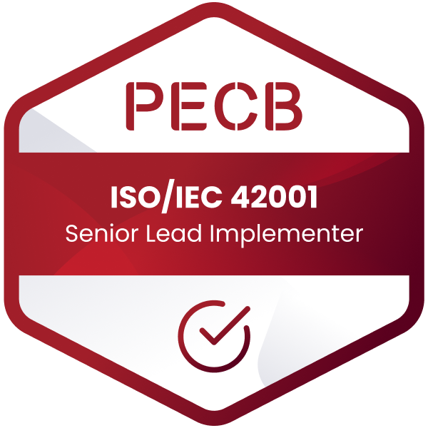

01 / GOVERN
AI Governance Strategy & Implementation
Design governance operating models, policies, accountability, and lifecycle controls aligned with ISO/IEC 42001 and NIST AI RMF.
AI Governance · Assurance · Transformation
We help organizations govern, evaluate, and scale AI—bridging the gap between technical complexity, responsible innovation, and measurable business value.
Deep AI expertise. Practical governance. Enterprise impact.
What we do
From strategic direction to operational controls, we make AI governance actionable and help businesses realize value from intelligent systems.
Design governance operating models, policies, accountability, and lifecycle controls aligned with ISO/IEC 42001 and NIST AI RMF.
Assess organizational maturity, identify governance gaps and risks, and prioritize a practical roadmap for improvement.
Evaluate third-party AI providers for technical capability, transparency, reliability, risk, and fit for your enterprise.
Review product architecture, AI decision workflows, traceability, human oversight, and controls across the product lifecycle.
Build appropriate safeguards and accountability for AI-powered operations, automations, and agentic workflows.
Identify high-value opportunities, redesign processes, and build realistic roadmaps that connect AI investment to business outcomes.
Our approach
Effective AI governance goes beyond policy documents and checklists. It requires understanding the systems themselves: architecture, data flows, model behavior, decision logic, human oversight, and real-world operations.
Neuroloft combines hands-on enterprise AI experience with structured governance methods to create controls that are both rigorous and practical.
Why Neuroloft
We bring the perspective of leaders who have built, deployed, and scaled complex AI systems—not only assessed them.

Let's talk
Whether you're launching an AI product, assessing third-party solutions, or building an enterprise governance program, Neuroloft can help you move forward with clarity and confidence.
Get in Touch →